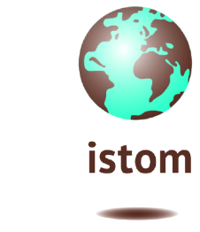
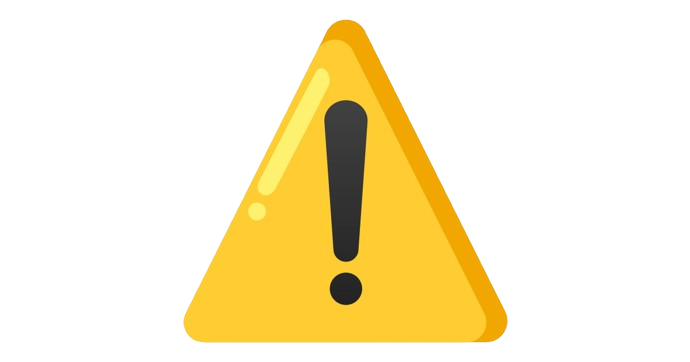
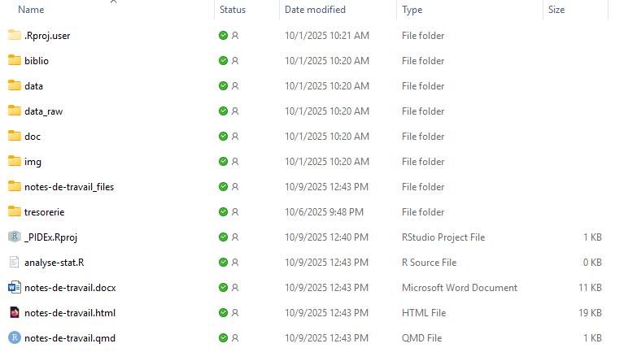
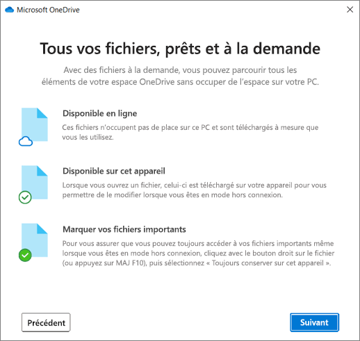

Projet d’initiation à la démarche expérimentale 
Cette page est en construction. Si vous avez la moindre question ou remarque ne pas hésiter à contacter par mail : a.gere@istom.fr

Introduction
Le Projet d’Initiation à la Démarche Expérimentale (PIDEx) est votre projet de troisième année d’étude à l’ISTOM. Il se déroule sur deux semestres :
- Semestre 5 : Identification du problème, revue bibliographique, conception du protocole, début des expérimentations
- Semestre 6 : Mise en œuvre expérimentale, analyse et valorisation des résultats
Les objectifs pédagogiques sont :
- Réaliser un projet d’expérimentation complet en groupe (4 à 5 personnes)
- Savoir planifier son travail, collaborer efficacement et s’insérer dans un collectif.
- Développer une réflexion scientifique : poser une problématique, formuler des hypothèses, concevoir un protocole, produire et analyser des données.
- S’exercer à la critique, à l’argumentation et à la valorisation scientifique (écrit + oral).
De façon plus détaillé, chaque étudiant va réaliser un projet d’expérimentation de A à Z en groupe de 4 à 5 personnes, à partir d’une proposition de sujet d’un ou deux enseignants-chercheurs de l’ISTOM en lien possible avec leurs thématiques de recherche et/ou les orientations stratégiques d’une entreprise. La demande est volontairement concise pour favoriser l’appropriation du sujet par le groupe. Les enseignants-chercheurs qui propose le sujet sont les tuteurs et accompagnent le groupe dans l’ensemble des différentes actions pour mener à bien le projet.
Chaque étudiant va donc apprendre à être capable de :
- Prévoir son travail dans la durée pour répondre à des objectifs précis et préalablement définis
- S’insérer dans un collectif varié (autres membres du groupe, avec un tuteur, éventuellement collaborateurs externes, en présentiel ou distanciel) pour collaborer et répondre à des objectifs communs
- Intégrer son action scientifique dans un contexte global, en appréhendant l’existant et en discutant ses résultats à la lumière de l’état actuel des connaissances, notamment via une approche de bibliographie
- Se confronter au contexte international de la recherche scientifique
- Inscrire sa réflexion dans une approche hypothético-déductive, notamment en identifiant une problématique et en formulant des hypothèses permettant d’y apporter une réponse
- Concevoir une méthodologie et une approche expérimentale pour mettre à l’épreuve ses hypothèses ;
- Produire des données scientifiques fiables et exploitables, notamment en questionnant la façon dont ces dernières sont obtenues
- Porter un regard critique notamment par l’analyse et l’interprétation de ses résultats scientifiques
- Valoriser son travail par des communications orales et écrites de nature diverse
Organisation
Les grande phase de votre travail
Le PIDEx s’articule sous forme de phases méthodologiques successives.
Le semestre 5 permet de développer les deux premières dans leur totalité : identification du problème et conception du protocole.
La troisième phase (mise en œuvre expérimentale) démarrera également au cours du semestre.
Le semestre 6 permet de continuer la phase expérimentale et de développer les deux suivantes : analyse de données et valorisation des résultats.
Ces trois dernières phases sont amenées à se superposer au cours du semestre 6 pour maximiser l’organisation du groupe.
La constitution des groupes
Il est demandé aux étudiants de former un groupe par sujet.
Afin de constituer les groupes, il vous est demandé de respecter les règles suivantes :
- entre 4 et 5 étudiants par sujet
- la constitution des groupes doit respecter celui des groupes de langues (la totalité des membres du groupe doit faire partie soit des groupes de langues A et C, soit B et D)
- entre un ou deux étudiants en ERASMUS par groupe :
- les groupes de 4 doivent comporter 0 ou 1 étudiant en ERASMUS,
- les groupes de 5 doivent comporter entre 0 et 2 étudiant(s) en ERASMUS, mais le choix de 0
Le cas particulier des étudiant-es en ERASMUS
Les étudiants en ERASMUS ne sont pas soumis à la réalisation du travail pour le PIDEx durant le semestre 5, puisqu’ils sont détachés dans d’autres universités et ont donc des obligations pédagogiques uniquement envers ces institutions.
Il leur est malgré tout fortement conseillé de se tenir au courant de l’avancement des travaux de leur groupe, afin qu’ils soient opérationnels le plus tôt possible lors de leur retour au semestre 6.
Les étudiants restés à I’ISTOM durant le semestre 5 veilleront à rendre accessible aux étudiants en ERASMUS l’ensemble des informations relatives à l’avancement du groupe sur le projet et à bien anticiper leur intégration au groupe lors du semestre 6.
Dossier de travail OneDrive
Pour votre travail un dossier OneDrive vous a été partagé. Dans ce dossier vous y trouverez les documents et dossiers suivants :

Il vous est demandé de synchroniser ce dossier OneDrive sur votre ordinateur personel.
Étapes de synchronisation d’un dossier partagé OneDrive sur Windows ou Mac
- Vérifier OneDrive sur son PC
- Cliquer sur le bouton Démarrer et tape OneDrive
- Si OneDrive n’est pas installé, télécharger le depuis la page officielle Microsoft OneDrive
- Se connecter avec son compte Microsoft ISTOM
- Accéder au dossier partagé
- Ouvrir un navigateur internet (Firefox, Edge, Chrome, etc.)
- Se connecter sur https://onedrive.live.com/login
- Dans le menu à gauche, cliquer sur Partagé
- Trouver le dossier que à synchroniser
- Synchroniser le dossier à son OneDrive
- Ouvrir le dossier partagé dans le navigateur
- En haut, cliquer sur le bouton Synchroniser
- L’application OneDrive va alors se lancer automatiquement
- Confirmer que vous souhaiter synchroniser ce dossier
- Retrouver ce dossier synchronisé sur son ordinateur
- Ouvrir Explorateur de fichiers (touche Windows + E)
- Dans le menu de gauche, il va apparaitre une rubrique ISTOM
- Le dossier sera alors présent dans cette rubrique ISTOM
Usage si vous travaillez sur un ordinateur de l’école
Si vous travaillez sur un ordinateur de l’école, dans ce cas il est plus pratique de créer un raccourci du dossier partagé sur votre OneDrive ISTOM. La démarche à suivre est très bien expliquée sur cette vidéo.
Convention sur la synchronisation des documents et dossiers sur OneDrive

Sujets
Développement d’une bière à base de dattes, hibiscus et houblon : étude des aspects gustatifs et fermentaires
Substitution de la poudre de cacao par de la farine de caroube torréfiée : impact sur le profil sensoriel et la texture des produits
Caractérisation et analyse des sols togolais de la région de Blitta
Optimisation de la croissance du kéfir d’eau avec un objectif de sucre résiduel contrôlé
Étude du transfert d’huile et d’eau lors de la friture profonde : modélisation expérimentale pour limiter l’absorption d’huile (cas produit 1)
Étude du transfert d’huile et d’eau lors de la friture profonde : modélisation expérimentale pour limiter l’absorption d’huile (cas produit 2)
Évaluation des ressources mellifères d’une zone par une approche mélisso-palynologique
Perception sensorielle de l’eau: les consommateurs distinguent-ils les différences de goût ?
Effets du stress hydrique sur la physiologie du riz
Optimisation de la production de spiruline pour l’alimentation animale (monogastriques)
Impact de l’éco-pâturage sur la biodiversité des prairies (faune et flore)
Optimisation de la production de fromage en fonction du type de lait (bufflonne, chamelle)
Intérêt du biofloc pour les élevages piscicoles intensifs (poisson-chat, tilapia)
Analyse des paramètres physico-chimiques du sol pour caractériser finement les parcelles destinées à l’alimentation animale (notamment bovins)
Substitution du houblon par de l’hibiscus infusé : jusqu’à quel taux peut-on maintenir une amertume perçue équivalente à une bière blonde (20 - 25 IBU) ?
Optimisation d’un milieu “low-cost” à base d’eau de coco (EC) pour améliorer la qualité des plantules de bananier (Musa)
Évaluation de l’impact de différents matériaux de couverture et de surface (tôle, ardoise, graviers, couvert végétal) sur le ruissellement et l’infiltration en contexte d’imperméabilisation des sols
Optimisation du kéfir de lait : influence du substrat sur le goût et la texture
Planing
- Présentation de l’exerice PIDEx : Lundi 6 octobre 2025
- Composition des groupes : Vendredi 10 octobre 2025
- Intervention de la Bibliotéque Universitaire d’Angers
- Dépot de la note bibliographique : Vendredi 14 novembre 2025
- …
Budget
Un budget de 100 € par groupe est mis à disposition de chaque groupe, dans le cadre de la mise en oeuvre expérimentale pour l’achat de matériel non présent à l’ISTOM ou pour les déplacements en dehors de l’école.
Si l’ensemble des dépenses d’un groupe ne dépasse pas 100 €, la totalité sera prise en charge par l’ISTOM. En revanche si les dépenses dépassent 100 €, le complément ne sera pas pris en charge par l’ISTOM. Il n’est donc pas conseillé de dépenser plus de 100 € par groupe. Un budget prévisionnel devra être associé au protocole lors du dépôt de l’écrit.
Toute dépense devra faire l’objet d’un accord au préalable de M Serman et/ou de votre tuteur.
L’ensemble des pièces justificatives sera transmis en une seule fois avec le budget réel donné.
Pour faciliter les remboursements, un trésorier de groupe sera désigné et c’est lui qui assumera l’ensemble des dépenses et sera remboursé par la comptabilité de l’école. A cet effet, il devra transmettre un RIB. Le remboursement se fera au plus tard 1 mois après la date limite de remise des budgets, sauf si demande expresse des trésoriers.
Identification du problème
Le premier livrable consiste en la rédaction d’une note bibliographique qui identifie le contexte de l’étude proposée par les tuteurs et pose la problématique associée et les hypothèses.
Cette note permet de justifier le travail expérimental du groupe à la lumière du contexte scientifique associé au sujet. Il s’agit de réaliser un état de l’art par rapport au sujet considéré, mais aussi d’être capable de poser la problématique et de la justifier à la lumière de l’existant.
La pratique de la langue anglaise et la confrontation aux travaux de la communauté scientifique internationale seront privilégiées. Ainsi, les références qui seront citées dans la bibliographie de la note devront être en langue anglaise pour au minimum 80% d’entre elles.
Il est programmé un appui à la recherche documentaire en collaboration avec la Bibliothèque Universitaire d’Angers. Une intervention à l’ISTOM sera programmé afin de présenter les grands outils associés, ainsi qu’un travail encadré en groupe de PIDEx à la Bibliothèque Universitaire d’Angers sera programmé pour se familiariser avec son environnement et la diversité des sources. Ce dernier permet également d’avoir une approche plus spécifique sur son sujet avec un soutien des intervenants.
Il est conseillé de programmer des points en groupe et de soliciter régulierement son tuteur afin de permettre la recherche bibliographique, la réflexion et la rédaction de la note par le groupe. Au moins 2 séances de travail accompagné consistant en des réunions avec le tuteur et programmées par les étudiants, seront à mettre en oeuvre pour confronter l’avancement du groupe à un regard extérieur et approfondir la réflexion autour de la question de recherche.
La note bibliographique devra être déposée aux fromats Word et PDF.
Ce travail d’écriture de la note bibliographique permettra d’évaluer la pertinence de la contextualisation, au travers d’une structuration de la rédaction qui met en évidence l’état de l’art autour de la question et la nécessité du travail scientifique expérimental proposé par le groupe, matérialisé par la problématique et les hypothèses associées.
Note bibliographique
Qu’est ce qu’une note bibliographique ?
Objectif général du présent document
Cette section a pour objet de vous donner les clés nécessaires à la réalisation de la note bibliographique demandée dans le cadre de l’évaluation du PIDEx au semestre 5. Cette note permet de positionner votre travail expérimental dans un existant scientifique. Elle permet, de manière synthétique, d’avoir une vision globale des références bibliographiques les plus pertinentes sur la thématique de l’étude, de mettre en évidence un manque dans les connaissances scientifiques que l’étude proposée va combler. Elle propose une problématique associée au sujet et donne quelques hypothèses qui proposent un bref aperçu du travail qui sera engagé dans la suite du travail.
L’écriture de la note bibliographique
Choisir les informations les plus pertinentes
Lors de vos recherches documentaires, vous avez accumulé un certain nombre de connaissances associées à des références bibliographiques en relation avec la compréhension de votre sujet. Il s’agit maintenant lors de la rédaction de la note bibliographique de sélectionner les informations et les références les plus pertinentes. Quelles sont celles qui décrivent le mieux les différents mots-clés de votre sujet ? Par exemple dans le cas d’un travail sur l’effet de la lumière sur les Végétaux, il s’agira de questionner quel est le végétal le plus pertinent en donnant les espèces qui ont été travaillées dans des études précédentes. Par exemple, vous constatez 10 références sur le maïs, 30 sur le blé et 5 sur le seigle, mais aucune sur le soja. Ainsi, vous pourrez justifier de la pertinence d’utiliser le blé car vous souhaitez vous inscrire dans la continuité de cette littérature fournie, ou de travailler le soja car aucune étude ne traite de cette espèce.
Les références scientifiques les plus pertinentes sont validées par la communauté scientifique. Ce sont des articles dans des revues scientifiques qui pratiquent la relecture par les pairs, c’est-à-dire que tout travail soumis dans ce type de journal est relu par un ou plusieurs scientifiques reconnus. Ces relecteurs ne connaissent pas l’identité des auteurs de l’étude et n’évaluent l’article qu’à la lumière de son contenu, et non en fonction de la qualité scientifique supposée d’un auteur. Que l’on soit titulaire d’un prix Nobel ou nouvellement docteur, tout scientifique est évalué de la même façon. Ce fonctionnement est d’ailleurs repris en PIDEx pour l’évaluation des différents documents écrits, car un enseignant-chercheur différent de votre tuteur évaluera vos productions. Des rapports ou des livres provenant d’institutions internationales scientifiques ou non comme la FAO, la Commission Européenne, le FMI, le CNRS, les Universités, le MNHN peuvent aussi être utilisées sans trop de problème en les citant. En revanche, les documents issus d’un auteur qui n’est pas clairement identifié, d’entreprises ou d’associations doivent être considérés avec la plus grande prudence, et ne sont pas acceptables dans la majorité des cas pour un article scientifique.
Du général vers le particulier
Le fil des idées doit aller des notions générales vers des points plus particuliers, par exemple en proposant une définition des mots-clés puis en précisant de plus en plus les notions, en illustrant toujours votre propos par des exemples issus de références bibliographiques. Cela permettra également de mettre en évidence des points d’interrogation, des manques de connaissances ou des zones de flou dans certaines connaissances scientifiques. Cette structure rédactionnelle vous permettra ainsi de positionner votre travail personnel comme légitime et digne d’intérêt au regard de ce qui existe déjà au sein de la communauté scientifique, et de répondre au manque de connaissances que vous avez pu mettre en évidence. Vous pouvez structurer votre note bibliographique en différents paragraphes qui vous permettent d’exprimer une idée à la fois. Des titres pour chaque partie ne sont pas forcément nécessaires et la structuration seule suffit à comprendre votre cheminement.
La problématique et les hypothèses
En fin de document, la problématique qui fait la synthèse de la réflexion est formulée et permet de donner l’orientation du questionnement auquel va répondre votre travail expérimental. Elle peut se décliner en plusieurs sous-questions qui permettent d’alléger la formulation de la problématique principale. Des hypothèses peuvent également être formulées, qui proposent une première réponse a priori à la problématique. Elles seront le point de départ de l’expérimentation, puisque tout le dispositif expérimental, l’obtention de données et leur analyse serviront à les valider ou les infirmer. Elles seront systématiquement formulées au conditionnel, ce qui permettra de bien les identifier au sein de votre document.
Les grandes règles de rédaction.
Le style rédactionnel de votre note bibliographique doit être le plus efficace possible. Des phrases courtes avec un sujet, verbe, complément sont souvent plus efficaces pour faire passer une information. Le présent est souvent employé, sauf dans le cas des hypothèses où le conditionnel est nécessaire, car ce qui est énoncé dans ce cas n’est pas encore prouvé. Il faut définir les notions essentielles mais ce document s’adressant à un public scientifique, il est inutile de revenir sur des définitions de notions basiques : par exemple le sol comme support de la vie terrestre ou l’eau composée de molécule \(H_2O\). Evitez l’utilisation des pronoms personnels à la première personne (« je » et « nous »), préférez par exemple la voie passive (« le seigle a été sélectionné pour évaluer l’effet de la lumière rouge » plutôt que « nous avons choisi le seigle et nous lui appliquons plusieurs niveaux de lumière »).
Concernant le recours aux références bibliographiques, toute idée, notion qui est extraite d’un document autre que le vôtre doit renvoyer à une source. Deux formes peuvent être rencontrées :
- Soit une citation mot pour mot peut être réalisée. La citation doit être courte et entre guillemets suivie ou précédée de la référence associée. Cette forme n’est pas à privilégier, et doit être utilisée avec parcimonie, 1 ou 2 fois maximum dans un document ; « L’utilisation de matières organiques basées sur des plantes fixatrices d’azote pour la production de fertilisants organiques semblent être un bon choix et l’utilisation d’Azolla est une de ces possibilités » (Maham et al., 2018).
- Soit il s’agit d’une reformulation, mais la référence associée reste nécessaire.
Certaines plantes fixatrices d’azote, comme la fougère aquatique Azolla, représentent une source intéressante pour produire de la matière organique qui servira de fertilisant (Maham et al., 2018).
La référence peut être positionnée en fin de phrase comme précédemment ou en début de phrase. Maham et al. (2018) indiquent que les plantes fixatrices d’azote, la fougère aquatique Azolla en tête, sont intéressantes en tant que fertilisants organiques.
Noter les formes précises de notation associées à la référence (les parenthèses, et al., la date). Toutes les sources dans le corps du document doivent renvoyer à une référence complète dans la bibliographie en fin de note. Les règles de citation et de rédaction des références bibliographiques doivent être scrupuleusement suivies, d’après la convention de rédaction des références bibliographiques.
La forme de la note bibliographique
La forme doit être la même que celle utilisée dans l’exemple de note bibliographique (voir ce document), c’est-à-dire avec un titre explicite qui peut différer du sujet proposé au lancement du PIDEx, les noms et prénoms des auteurs, leur appartenance professionnelle avec un indice numérique, 5 mots-clés maximum, et deux colonnes de rédaction. Les références bibliographiques peuvent être proposées sur une seule colonne. Concernant les mots-clés, il s’agit de termes qui ont un objectif d’optimisation du référencement du document dans les moteurs de recherche. Ils doivent donc être pertinents pour que votre production scientifique soit facilement retrouvée par des personnes qui s’intéressent à votre sujet. 4 pages maximum sans les annexes et la bibliographie sont imposées pour la rédaction de la note bibliographique. Il s’agira de préciser également le nombre de références bibliographiques en langue anglaise utilisées, sur le nombre total de références, et d’associer l’équivalent en pourcentage.
Conception du protocole
Une présentation par un enseignant chercheur sera réalisé pour présenter cette phase.
Afin d’accompagner les étudiants dans ce travail au moins 2 points doivent être programmés par les étudiants pour échanger avec les tuteurs.
Les étudiants doivent rendre leur protocole écrit sous format Word.
Les pitchs sont ensuite réalisés devant un jury selon le format suivant :
- 30 min d’oral, dont
- 10 min de présentation,
- plus 10 à 15 min de questions,
- plus 5 à 10 min d’évaluation.
Ce pitch du protocole permet de faire monter en compétences les étudiants sur la présentation d’un sujet très précis en un minimum de temps et convaincre des experts de la solidité de leur projet.
En termes de retour, le jury donne une appréciation générale avec trois réponses possibles :
- « Avis favorable »,
- « Un ou plusieurs points d’attention présents, à approfondir avec le tuteur »,
- « Attention, de sérieux changements à mettre en œuvre. A revoir avec le tuteur ».
Mise en oeuvre expérimentale
Une présentation par un enseignant chercheur sera programmé début d’anée civile.
Une organisation spécifique est mise en œuvre pour permettre le bon fonctionnement des laboratoires :
- Les laboratoires ne sont pas accessibles sans rendez-vous préalable auprès de M. SERMAND, les heures d’ouverture des laboratoires étant par ailleurs notées sur la porte. En dehors de ces créneaux l’accès est impossible
- Le box 11 est mis à disposition pour les expérimentations, il demeure ouvert pendant toute la durée du PIDEx
- Pour toute mise en oeuvre expérimentale en dehors de ces deux espaces, il faudra en faire la demande à M Sermand
Au moins deux échanges avec les tuteurs devront être programmés par les étudiants.
Afin de suivre de la meilleure des façons possibles les différentes expérimentations, un cahier de laboratoire doit être tenu par les étudiants de façon obligatoire. Il permettra de noter les différentes observations, modifications, ajouts au cours des expérimentations afin d’améliorer la qualité de l’évaluation des résultats par la suite, et assurera la traçabilité et la qualité des mesures réalisées et des données obtenues. Le cahier de laboratoire doit être à tout moment disponible pour l’ensemble des membres du groupe ainsi que pour le tuteur, et fera l’objet d’une évaluation qui rentrera dans la note de groupe attribuée par ce dernier.
Analyse des données
Pour indication 15 EP sont conseillées pour réaliser les travaux d’analyse des données y compris statistiques.
Afin d’accompagner les étudiants dans ce travail seront mis en place :
- 1 session d’accompagnement à la gestion statistique des données pourra être mise en place au cours du S6 ;
- Au moins 2 TA qui consistent en des réunions d’échange avec les tuteurs et programmées par les étudiants.
Cette phase doit être démarrée le plus tôt possible après le début de la mise en œuvre expérimentale, car une analyse des résultats permettra si nécessaire de modifier ou ajouter des modalités aux expérimentations afin d’affiner l’interprétation et la réponse à la problématique initiale. Aucune date de début et de fin ne sera clairement programmée. Il appartient à chaque groupe d’organiser cette phase méthodologique en fonction de son état d’avancement.
Valorisation des données
La valorisation des résultats obtenus est l’aboutissement du travail réalisé au cours de l’année et est un exercice à part entière qu’il convient de démarrer le plus tôt possible.
Il appartient à chaque groupe d’organiser cette phase méthodologique en fonction de son état d’avancement.
Démarche scientifique
Qu’est-ce qu’une démarche expérimentale ?
Définitions
Une démarche est une manière de progresser dans la pensée ou le raisonnement. Elle désigne la méthode adoptée pour atteindre un objectif ou aborder un problème.
La science est un ensemble cohérent de connaissances vérifiées par des méthodes expérimentales. Elle vise à décrire, expliquer et comprendre les phénomènes naturels et sociaux.
La démarche scientifique est un processus organisé pour comprendre le réel. Elle consiste à :
- poser une question issue de l’observation d’un phénomène ou de discussions/lectures,
- formuler des hypothèses,
- les tester par l’expérimentation, l’observation ou la documentation,
- confirmer ou infirmer ces hypothèses,
- élaborer, en cas de confirmation, une théorie ou un modèle.
Elle représente ainsi la méthode de travail utilisée en recherche scientifique.
Etapes de la démarche scientifique
- Observation
- Point de départ de toute recherche
- Basée sur faits, modèles, théories, croyances
- Fait émerger un problème ou un questionnement
- Hypothèse
- Types :
- Générale : explication théorique d’un phénomène
- Opérationnelle : variables mesurables (forme « Si… alors…»)
- Statistique : validée ou rejetée par des tests statistiques
- Tester une hypothèse implique :
- Formuler une hypothèse opératoire
- Concevoir un protocole expérimental
- Réaliser les expériences
- Analyser les résultats
- Expérience : 4 règles
- Varier un seul paramètre
- Garder les autres constants
- Témoin pour comparer
- Répéter pour fiabilité
- Résultats
- Observer et consigner les données.
- Comparer les tests pour vérifier la cohérence.
- Présenter : tableaux, graphiques, schémas
- Interprétation et conclusion
- Relier résultats \(\leftrightarrow\) hypothèse
- Confirme \(\rightarrow\) hypothèse validée / possible loi (provisoire)
- Infirme \(\rightarrow\) réviser ou nouvelles expériences
- Conclusion : récap (obs \(\rightarrow\) hypothèses \(\rightarrow\) tests \(\rightarrow\) résultats \(\rightarrow\) interprétation).
- La science progresse par remise en question + publication.
À quoi sert la démarche scientifique ?
- La démarche scientifique a pour but de :
- mieux comprendre le monde,
- encadrer les observations et idées des chercheurs,
- confirmer ou infirmer une hypothèse,
- vérifier des théories existantes ou proposer de nouvelles hypothèses.
- Elle constitue ainsi un système d’évaluation et de validation du savoir, reposant sur l’expérimentation et les tests.
Règles de base de la démarche scientifique
- Neutralité
- La science doit rester indépendante de toute influence politique, religieuse ou idéologique. Elle se base uniquement sur la raison et l’observation des phénomènes.
- Prise en compte des échecs
- Un échec expérimental doit conduire à une réflexion et à la reproduction des tests. Si l’échec persiste, l’hypothèse doit être révisée ou reformulée. -Doute
- En science, tout ce qui n’est pas prouvé ou confirmé peut être remis en question. Le doute est donc une étape essentielle.
- Expérimentation
- Une théorie n’est scientifique que si elle peut être testée et confirmée par l’expérience.
Critères d’une vraie démarche scientifique
- Questionnement : elle part toujours d’une situation problématique.
- Collaboration : les expériences se réalisent souvent en groupe, permettant la confrontation d’avis différents.
- Communication : indispensable au travail collectif et essentielle pour partager les résultats.
- Stratégies d’apprentissage : elles se développent au fil des différentes étapes de la démarche.
- Créativité : nécessaire lors de la conception du protocole de recherche, même si elle n’a rien d’artistique.
- Réflexivité : comparer les résultats obtenus aux hypothèses de départ suppose un retour critique sur la démarche.
Conditions et objectifs
- Conditions
- Maîtriser les savoirs et théories d’une discipline.
- Utiliser des outils et instruments adaptés à la collecte et l’analyse de données (quantitatives et qualitatives).
- Objectifs
- Expliquer, prédire, contrôler les phénomènes naturels.
- Construire le savoir par : observation, expérimentation, induction, déduction.
- Faire progresser les connaissances par étapes successives (réfutations ou synthèses).
Postulats
- Déterminisme (causes \(\rightarrow\) effets).
- Empirisme (observations vérifiables).
- Intégration théorique (faits \(\rightarrow\) lois \(\rightarrow\) théories).
- Dynamique (essais/erreurs, remise en question).
- Dimension publique (partage, reproduction, critique).
- Évolution paradigmatique (modèles qui changent).
Raisonnements & Démarches
- Inductif : particulier \(\rightarrow\) général (observations \(\rightarrow\) hypothèse).
- Déductif : général \(\rightarrow\) particulier (théorie \(\rightarrow\) test).
- Hypothético-déductif : poser \(\rightarrow\) prédire \(\rightarrow\) tester \(\rightarrow\) conclure.
- \(\rightarrow\) Principe clé : confrontation aux faits.
Limites de la méthode
- Vérité provisoire, révisable.
- Risques: erreurs, fraudes, biais, contextes sociaux/idéologiques.
Cycle de recherche
- Définir le problème + protocole
- Collecter les données
- Interpréter (valider / infirmer)
Lire et analyser un article scientifique
- Questions clés
- Problème, hypothèses, objectifs, résultats majeurs ?
- Échantillonnage, variables, contrôles, matériel, traitements?
- Structure IMRD
- Introduction (problématique, objectifs)
- Méthodes (milieu, pop., collecte, analyses)
- Résultats (clairs, cohérents, appuyés)
- Discussion/Conclusion (interprétation, limites, perspectives)
- Biblio : récente, pertinente, exhaustive.
Modalités d’évaluation
Semestre 5
Une note au semestre 5, décomposée de la façon suivante :
- Une note bibliographique, évalué par un enseignant chercheur différent de votre tuteur (1/3 de la note)
- Un présentation du protocole proposé par le groupe devant un jury (1/3 de la note).
- Une note d’évaluation portant sur la collaboration et l’organisation du groupe, divisée en trois modalités (1/3 de la note) :
- Une auto-évaluation de l’intégration propre de l’étudiant au sein du groupe
- Une évaluation par les pairs où chaque personne évalue tous les autres membres du groupe
- Une note tuteur qui évalue le groupe et chacun de ses membres
Semestre 6
Une note au semestre 6, décomposée de la façon suivante :
- Un poster et un résumé écrit. L’évaluation se fera lors de la session poster. Les modalités d’évaluation seront l’évaluation par les pairs et une évaluation par des scientifiques externes au groupe. (2/3 de la note)
- Une note d’évaluation portant sur la collaboration et l’organisation du groupe, divisée en trois modalités ( 1/3 de la note) :
- Une auto-évaluation de l’intégration propre de l’étudiant au sein du groupe
- Une évaluation par les pairs où chaque personne évalue tous les autres membres du groupe
- Une note tuteur qui évalue le groupe et chacun de ses membres
Remarque
Tout retard sera pénalisé par 0.5 point par fromat et par demi-journée de retard.